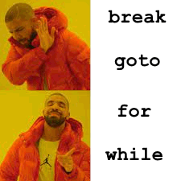

literally just programming
basically do it properly
Use flow charts or pseudocode to lay out the algorithm
Test it with a trace table
(or just use an IDE that tells you what went wrong)
Sequential:

Concurrent:
Parallel:
reduces downtime, but takes longer to finish tasks
executes tasks faster, but requires more expensive hardware
A problem is computable if:
If you want to do something, but you don't want to actually do it, you can create a model and simulate doing it. This saves time and money
A method of solving problems by making them smaller and simpler, until they are trivial, then combining them back up to the original. Examples of algorithms that use this include binary search and quicksort.

This involves making decisions and keeping track of them until you reach a dead end, then retracing your steps with the knowledge that the choice you made doesn't work. Used in algorithms such as depth-first search and recursive backtracking maze generators.
If you have a problem, try using graph theory. The problem may be isomorphic to something very simple
(is this just the same as abstract modelling?)
Many problems can easily be visualised with a graph or a tree. This makes it easy to spot obvious solutions, avoiding unnecessary work with a simple diagram. (Miss McEwan would agree)
“Big data is big. Really big. You just won't believe how vastly, hugely, mind-bogglingly big it is. I mean, you may think it's a long way down the road to the chemist's, but that's just peanuts to big data!”
Data mining is about searching for patterns and correlations in datasets that are so large, conventional methods cannot be used.
Pipelining is basically where you break up a task into lots of little ones then overlap their processing. For example, when one is being processed one way, another is being processed in another, etc.
Says that given a list of places and the distances between them, find the shortest route that the salesman can go to visit each town once and get back to where he started.
Its said to be intractable because it will take a long time with a very fast computer to find an optimal solution to a problem with a small amount of cities. It becomes impossible as the number of cities increases. üòî
Time complexity is a measure of how long an algorithm takes as the number of inputs scales. It doesn't tell us exactly how long the algorithm will take to complete, but rather how much longer it would take when the problem gets bigger.
Time complexities often end up falling into categories, the highest order term in the polynomial function. These are, in ascending order of size:
| O(1) | O(log n) | O(n) | O(n log n) | O(n²) | O(2ⁿ) | O(n!) |
Problems can be solved enough by: getting a solution with a high probability of being correct, solving a simpler version or by applying a methodology not guaranteed to be optimal but is sufficient. The latter being the heuristic approach. The aim is to find a good solution within a reasonable time frame. Some heuristic solutions have already been comprised for the travelling salesman problem.